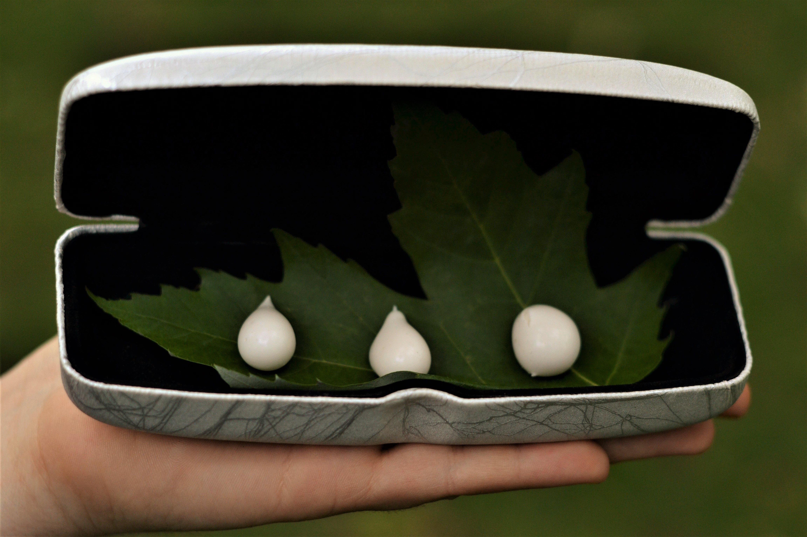
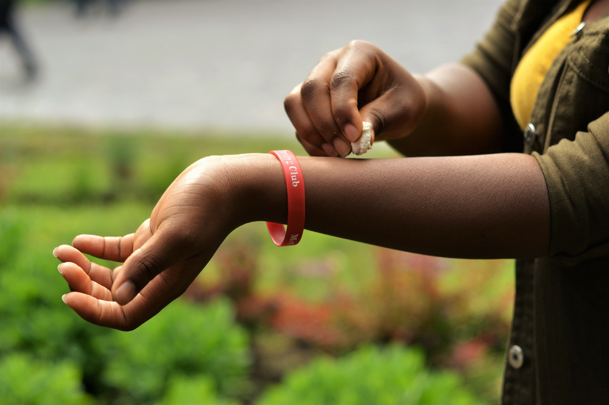
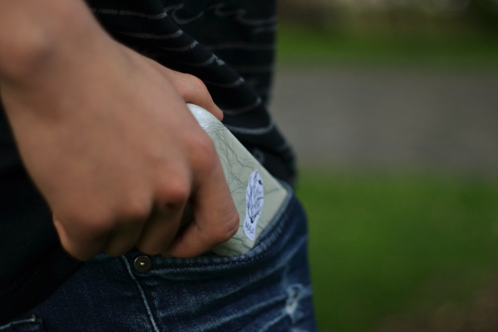

ABOUT
MAAScreen is a product innovated by 15 motivated McGill bioengineering students who have extensively researched the problem with current sunscreens available on the market.
Motivated by their passion for biology, innovation and a brighter future for our oceans, the team members have committed countless hours into developing a solution which is not only sustainable from an environmental and financial standpoint, but also feasible based on the current research on algae-derived MAAs.
About BDC
The biodesign challenge aims to think about future applications of biotechnology in a creative way. Mostly targeted towards arts and design students, the BDC asks participants to not only come up with a biology-related concept, but also to thoroughly envision the impact it would have on society.
A unique approach
Our team is entirely composed of students in the bioengineering undergraduate program at McGill University in Montreal. In approaching the Biodesign Challenge, we believe that our unconventional background allow us to see this project from a unique point of view, one that is rooted in a desire to engineer a better future.
OUR SOLUTION
MAAScreen, our eco-friendly and biodegradable sunscreens, resolves many environmental issues that arise from conventional sunscreens on the market.
The dangerous chemical products in these sunscreens like oxybenzone threaten the marine environment.
We made it our mission to find a more natural alternative for consumers.
Inspired by the concept of biomimicry, we came up with the idea of extracting mycosporine like amino acid (MAA) from algae, a compound
which provides broad-UV protection, similar to current available sunscreens.
To ensure the minimization of environmental harm, we developped a life-cycle to our product that would benefit the environment every step of the way.
PROTOTYPE
Our designed prototype gives a preview of both the MAAScreen product
and its packaging format.
With our main goal being to provide a more ecological
sunscreen product, we have opted for a
biodegradable packaging and reusable containers
for the entire MAAScreen kit.

Sodium alginate, a product of brown algae, and calcium lactate are used to form the packaging “bubble”
that
will enclose the appropriate portions of sunscreen required instead of
commercial plastic bottles. With this method,
our packaged cream retains a “tear-drop” shape and can be
customized with different sizes and different colors and patterns.

Furthermore, the kit includes mess-free portable cases to place the MAAScreen balls that are to be used when going outside.
This allows for immediate application, as one simply picks up a MAAScreen ball and applies it on the desired region.

RESEARCH
Why choose MAAScreen?
As previously mentionned, oxybenzones, the compound found in current sunscreens, are detrimental to the environment. Mycosporine-like amino acids (MAA) are a naturally ocurring, UV-blocking chemical compound released by algae and cyanobacteria when exposed to light. MAAs show promise as an alternative since they are biodegradable, easy to harvest and are already present in nature. The MAAs will then be processed such that they have a strong bio-adhesive property in order to be able to withstand water and to not fall off during daily activities. Most of the current research on MAAs is based on the algae known as Gracilaria vermiculophylla, a ground-roaming algae that grows as a source of food in oyster farms, but often end up harming the environment in which they grow.
Production
To ensure a constant flow of MAAs, the main income will be from algaculture based on photobioreactors (PBRs). PBRs will ensure
the optimization of MAA output from the algae farms. The MAAs can be harvested from a variety of algae through a common lysing procedure.
The MAAs are then to be purified, mixed with other agents such as moisturizers, and finally made into bio-adhesive molecules so that they
properly adhere to the user's skin. The final product will be encapsulated in an alginate film, creating a "bubble" of sunscreen to be applied
in different quantities without the need of plastic packaging.
Furthermore, a section of our company will be entirely devoted to bioremediation. Every spring, harmful algal blooms (HABs) take over
some bodies of water, suffocating the wildlife beneath them by depriving them of light and food. This being said, we would filter the algae out of
the water using various practices already established, and harvest the collected algae for their MAAs, effectively creating a net positive outcome for the life
cycle of our product.
Potential harm
The sunscreen pods, with their attractive and small size, might lead children to wonder if it tastes like candy.
Although this product is natural and biocompatible, the sunscreen should not be consumed; the adhesive used for the encapsulation
of the sunscreen can lead to health complications, such as suffocation if ingested.
Another potential risk is during harvesting of the HABs. It is important to differentiate the species of algae
during cultivation and harvest solely the harmful ones. If this is not respected by the harvesting companies, the biodiversity
of marine life will decrease, which conflicts with our mission to restore the biodiversity that was lost due to the boat transport
of algae around the world. For this reason, we ensure that biologists and ecologists work in collaboration with our remediation teams
to ensure a proper cleanup.
Meet the team
Ella Reifsnyder
Team LeaderKieran Guinan
Head of Research SubcommitteeLucas Hamilton-Bourezg
Head of Website SubcommitteeOra Cohen
Head of SponsorshipSarah Jurchuk
Head of Prototype SubcommitteeAnne-Marie Doucet
Head of Presentation SubcommitteeMustafa Fakih
Head of Finance
Kimia Shafighi
Head of ManagementDanièle Sossou
Team memberWen Da Lu
Team memberMathura Ka
Team memberMegan Wai
Team memberCONTACT US
For further inquiries, please contact us at buss.vpexternal@mcgilleus.ca